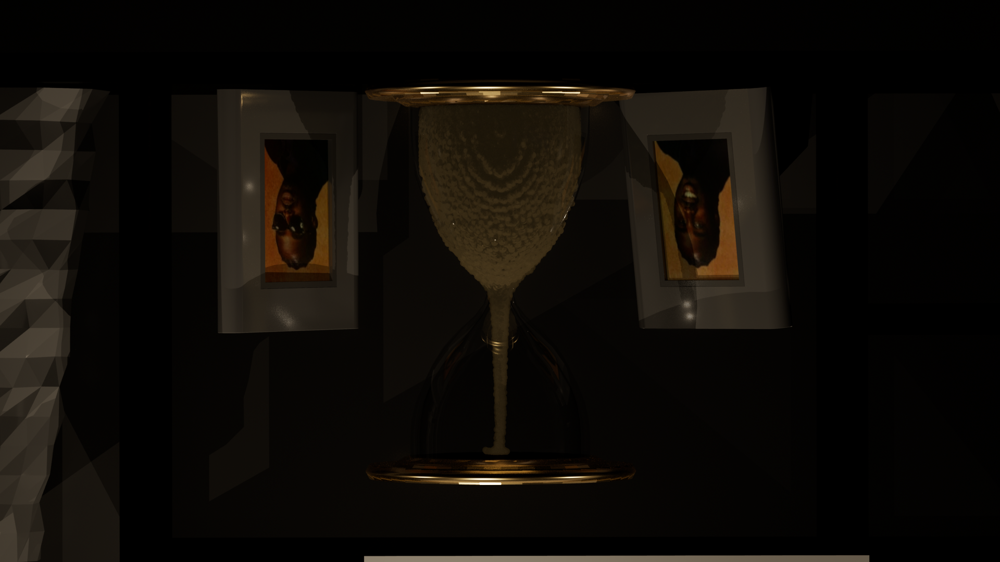
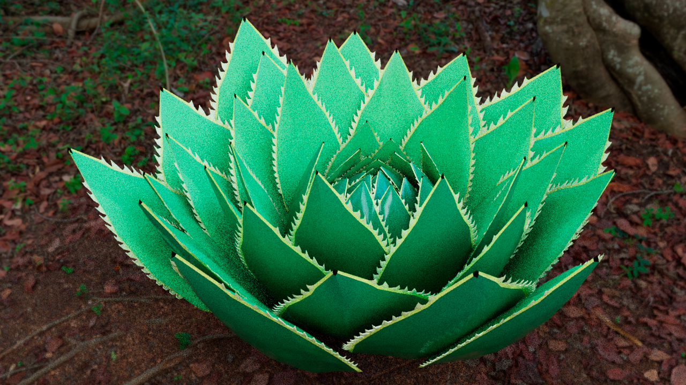

PORTFOLIO
Depicted below are some quick examples of previous works modeled,
animated, and/or rigged by myself using Autodesk Maya.
Depicted below are some quick examples of previous works modeled,
animated, and/or rigged by myself using Autodesk Maya.
 |
A simple rat model, created, textured, and rendered entirely from within autodesk maya using Arnold renderer, without the use of any external textures or assets. |
|  | An Hourglass, modeled, textured and rendered by myself using Arnold renderer in Autodesk Maya. Sand simulation generated using Bifröst in Autodesk Maya. Surrounding scene provided by "Deline" on CGTrader. |
|  | An aloe plant, modeled, textured, and rendered in autodesk maya using arnold renderer. |
| A Chainsaw, fully modeled, textured, and rendered in autodesk maya using arnold renderer. |